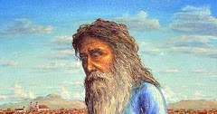
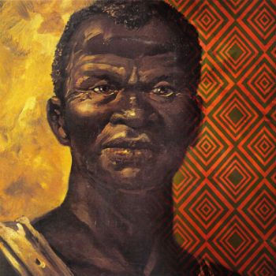

Biografias
André de Albuquerque Maranhão

André de Albuquerque Maranhão foi um proeminente e um dos líderes da Revolução de 1817 (também conhecida como Revolução Pernambucana). É lembrado como um dos líderes corajosos e idealistas da Revolução Pernambucana.
➞ Continuar lendoAntônio Vicente Mendes Maciel
Antônio Conselheiro, foi um líder religioso e social Nordestino, que com sua conduta carismática exerceu forte influência nas camadas mais humildes de nossa sociedade. Sendo o responsável pela fundação da Comunidade de Canudos.
➞ Continuar lendoAntônio Filipe Camarão
Antônio Filipe Camarão, foi um líder indígena potiguara aliado dos portugueses. Foi um dos heróis da Batalha dos Guararapes, episódio decisivo da Insurreição Pernambucana. Recebeu o título de "Capitão-Mor de Todos os Índios do Brasil".
➞ Continuar lendoAntônio Paraupaba
Antônio Paraupaba, foi um líder militar, intérprete, mediador e líder nordestino dos indígena Potiguara. Desempenhou um papel significativo como líder dos Potiguaras durante o período da colonização portuguesa. Sendo um dos principais líderes indígenas que resistiram aos avanços e às tentativas de dominação dos colonizadores portugueses. Aliado do neerlandeses converteu-se a fé reformada.
➞ Continuar lendoCipriano José Barata de Almeida
Cipriano José Barata de Almeida foi um médico e político baiano, que teve importante participação na liderança da Conjuração Baiana (1798), também conhecida como Conspiração dos Alfaiates.
➞ Continuar lendoDandara dos Palmares

Dandara dos Palmares, foi uma guerreira que viveu no Quilombo dos Palmares, o maior Quilombo da história do Brasil, e ficou conhecida por seu engajamento na luta contra os portugueses, sendo um dos principais nomes da luta negra no país.
➞ Continuar lendoFrei Joaquim Do Amor Divino Caneca
Frei Joaquim do Amor Divino Caneca Foi um dos grandes pensadores literários no momento da Independência brasileira. Participou ativamente da Revolução Pernambucana 1817 e da Confederação do Equador 1824. Sendo um dos líderes de ambos movimentos.
➞ Continuar lendoFrancisco Sabino Álvares da Rocha Vieira Barroso
Francisco Sabino, foi uma figura importante durante o período do Segundo Reinado no Brasil. Ele foi um militar de carreira e participou de eventos históricos, como a Guerra do Paraguai (1864-1870), na qual atuou como tenente-coronel e comandou o 2º Batalhão de Artilharia Montada.
➞ Continuar lendoJoaquim Nabuco
Joaquim Nabuco, foi um importante político, diplomata, escritor e abolicionista Nordestino brasileiro. Foi um dos fundadores e patrocinadores da Sociedade Brasileira Contra a Escravidão. Também atuou como diplomata brasileiro e representou o país em diversas ocasiões.
➞ Continuar lendoGanga Zumba
Ganga Zumba, foi uma figura histórica importante durante o período colonial, sendo o primeiro líder do Quilombo dos Palmares.
➞ Continuar lendoManuel Francisco dos Anjos Ferreira
Manuel dos Anjos Ferreira, conhecico como Manuel Balaio. Foi um líder importante durante a Balaiada, uma revolta ocorrida no Maranhão entre 1838 e 1841.
➞ Continuar lendoMiguel Joaquim de Almeida e Castro
Mais conhecido como Padre Miguelinho, foi um um dos líderes e revolucionário Nordestino brasileiro conhecido por sua atuação na Revolução Pernambucana de 1817..
➞ Continuar lendoMaria Felipa
Maria Felipa de Oliveira, foi uma heroína Nordestina brasileira. Teve um papel significativo na luta pela Independência do Brasil na Bahia, durante o período colonial. É conhecida principalmente por sua participação na Batalha de Itaparica, que ocorreu em 1823.
➞ Continuar lendoMaria Quitéria
Maria Quitéria de Jesus foi uma militar baiana que lutou na Guerra da Independência do Brasil. Ela se disfarçou de homem para se alistar no exército, adotando o nome de "Soldado Medeiros".
➞ Continuar lendoPedro Poti
Pedro Poti, foi um líder indígena da etnia Potiguara, da região Nordeste. Desempenhou um papel significativo durante o período colonial do Brasil. Reconhecido por sua bravura e habilidades militares, o que lhe conferiu uma posição de destaque entre os indígenas locais. Era aliado dos neerlandeses contra os portugueses.
➞ Continuar lendoPadre Cícero Romão Batista
Padre Cícero, foi um sacerdote e líder religioso Nordestino, veio a desempenhar um papel muito significativo na vida religiosa de seus seguidores, além de desempenhar um papel muito importante no âmbito social e político.
➞ Continuar lendoZumbi dos Palmares
Zumbi dos Palmares, foi um dos líderes mais conhecidos do Quilombo dos Palmares, um dos maiores e mais duradouros quilombos da história do Brasil colonial.
➞ Continuar lendoClara Joaquina de Almeida Castro.
Clara Joaquina de Almeida Castro, conhecida também como, Clara Castro. Foi uma personagem histórica e heroína durante a Revolução Pernambucana de 1817, junto a seu Irmão Padre Miguelinho.
➞ Continuar lendo